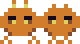

The enemy aliens will feature a simple animation, made with a spritesheet:

Sprites are loaded in a similar way to regular images, but we will also need to supply the frame width and height.
game.load.spritesheet('key', '/path/image.png', 50, 30);A single spritesheet can contain multiple animations, so we must add them manually in the sprite, specifying which frames the animation takes.
Once added, we can play or stop it calling the appropriate methods.
this.animations.add('fly', [0, 1]);
this.animations.play('fly', fps, looped);